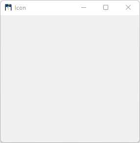
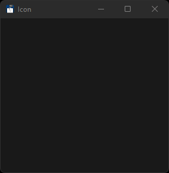
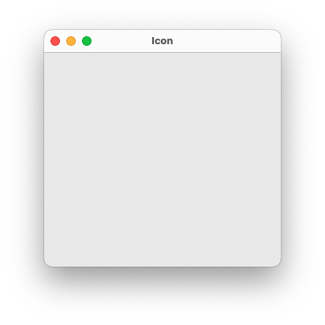
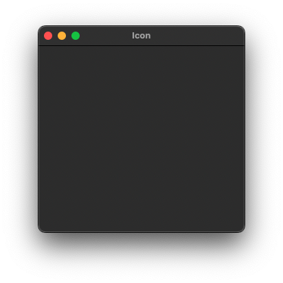
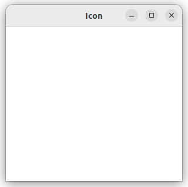
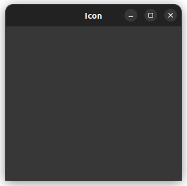

|
xtd
1.0.0
|
Loading...
Searching...
No Matches
tutorial_application_icon.cpp
First we create the very basic xtd::forms program.
- Windows


- macOS


- Gnome


#include <xtd/xtd>
namespace tutorial {
public:
form_icon() {
text("Icon");
start_position(xtd::forms::form_start_position::center_screen);
}
static auto main() {
xtd::forms::application::run(form_icon());
}
};
}
startup_(tutorial::form_icon::main);
static auto gammasoft() noexcept -> xtd::drawing::icon
Gets an xtd::drawing::icon object that contains the Gammasoft logo icon.
static auto run() -> void
Begins running a standard application message loop on the current thread, without a form.
Represents a window or dialog box that makes up an application's user interface.
Definition form.hpp:54
#define startup_(...)
Defines the entry point to be called when the application loads. Generally this is set either to the ...
Definition startup.hpp:152
@ center_screen
The form is centered on the current display, and has the dimensions specified in the form's size.
Definition form_start_position.hpp:26
Generated on for xtd by Gammasoft. All rights reserved.